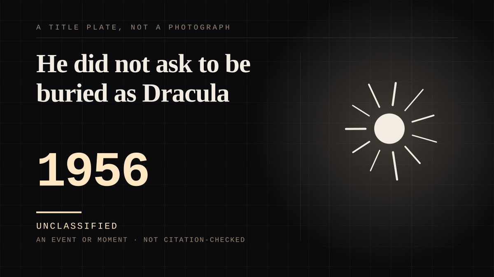

An event or moment · 1956 · Postwar
He did not ask to be buried as Dracula
The most reproduced image in the horror canon - a man interred in his character's cape - is true, and the story that he chose it is false. His mother chose it.

A small correction with a large afterlife, and the reason this entry exists: the most famous single image in horror fandom is a document about the gap between an audience's picture of somebody and the person. Bela Lugosi died on 16 August 1956 and "was buried wearing a Dracula cape, his full costume, and his Dracula ring in the Holy Cross Cemetery in Culver City, California." All of that is true and it is why the grave is a pilgrimage site. Then: "Contrary to popular belief, Lugosi never requested to be buried in his cloak; Bela G. Lugosi confirmed on numerous occasions that he and his mother, Lillian, made the decision." So the romantic version - the actor asking to be buried as the vampire - is wrong, and the true version is better: his son and his mother chose it, which is a family making a decision about a character rather than a performer choosing his own ending. That is the difference between this site and a fandom wiki, and it is worth an entry on its own because the myth was the better story. One more thing the record corrects while it is here: "The rumor that Lugosi was clutching the script for The Final Curtain, a planned Ed Wood project, at the time of his death was a myth" - another of the famous last-images that nobody checked. And a coincidence worth not muddling: Mickey's name was suggested by Disney's wife Lillian, and this decision was taken by Lugosi's son Bela G. and his mother Lillian. Two different Lillians, twenty-eight years and one of them deciding what a dead man would be wearing.
Where it sits
1950 1950-1999 · 1956 1999
Provenance · 1 source record(s)
- retrievableThe burial and its correction: 'Hungarian actor (1882-1956)', death 16 August 1956 in Los Angeles, resting place Holy Cross Cemetery, Culver City. 'Lugosi was buried wearing a Dracula cape, his full costume, and his Dracula ring in the Holy Cross Cemetery in Culver City, California. Contrary to popular belief, Lugosi never requested to be buried in his cloak; Bela G. Lugosi confirmed on numerous occasions that he and his mother, Lillian, made the decision.' And the other myth, named as one: 'The rumor that Lugosi was clutching the script for The Final Curtain, a planned Ed Wood project, at the time of his death was a myth.'Bela Lugosi. Wikipedia. ↗
Connected · 3 out, 0 in
Reported as a story
It sits in